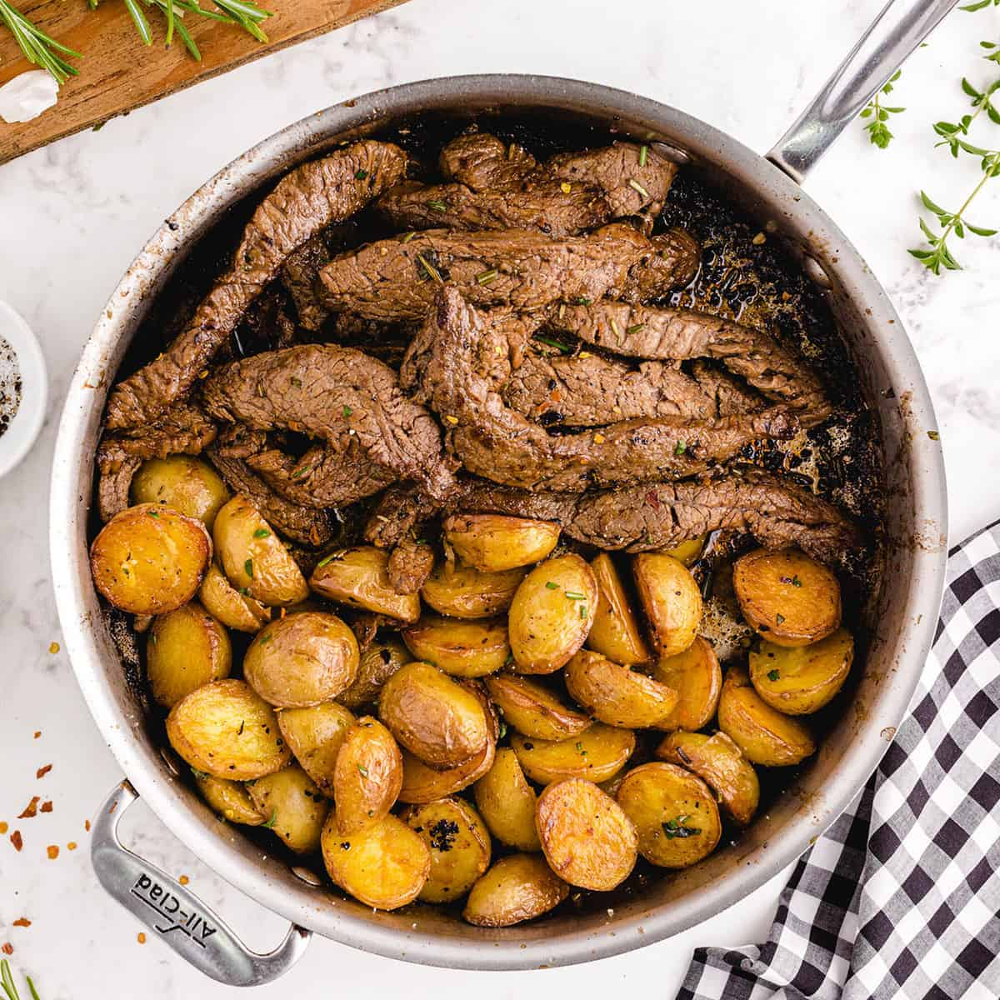

Oldie but always goodie Steak
Steak and Potatoes. Basic, easy and boring maybe. But never disapoints, and, it never fails, wheter is a special moment or not, it's walys good.

Ingredients
- Steak, any cut you like
- 2 to 3 potatoes
- 1/4 cup of olive oil
- 3 to 4 garlic cloves
- Salt and pepper up to taste
Preparation
-
To start we have to put water in a pot and let it with high fire until it start to boil. In the mean time, we can chop the potatoes as we like,
personally i like to do it in cubes so it cooks more fast. And measure the quantity of steak that we want to cook, unless you have a big cut.
-
When the water is boiling, we put the potatoes in the pot and let it cook for 10 to 12 minutes, or until it's soft. As soon as the potatoes are soft,
we strain it and put it in a bowl to start mashing it, but another way to do it is to grill them in a pan with some spices and they are gonna be as good as mashed.
-
While the potatoes are cooking we can start cooking the steak. No matter if we made it on a pan or in a grill, we have to wait until it's hot, and then put the steak.
To give more flavor to the steak, we can put some garlic cloves and olive oil in the pan or grill, and let it cook with the steak. Remember to flip the steak from time to time to avoid it to burn.
-
When the steak is ready, we put it in the bowl with the potatoes, and mix it with the oil and garlic.
- And to finish, when your serve you can put a little but of salt and pepper on top. And thats it!
Drinks to acompany with
Go back